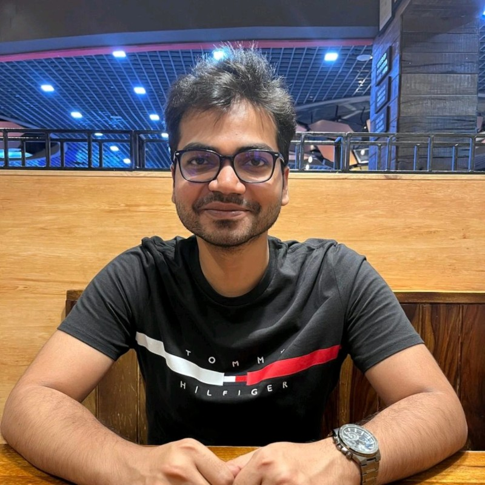

Results-driven Python Backend Engineer with around 9 years of experience designing and delivering scalable, high-performance software solutions. Expert in architecting robust backend systems and championing DevSecOps best practices to ensure secure, reliable, and efficient software delivery. Proven ability to bridge development and operations, streamline CI/CD pipelines, and foster collaborative, high-performing teams. Passionate about leveraging Generative AI and LLM orchestration to automate, optimize, and innovate development processes, driving continuous improvement and future-ready solutions.
Let's Connect
Amadeus | 01/2024 - Present
Key contributor to a company-wide SDL initiative, embedding security into every developer’s workflow and enabling seamless use of advanced security scanners without requiring deep security expertise.
Designed and developed modern Python microservices and APIs using FastAPI and Flask, implementing a dual virtual environment architecture for robust dependency management and near 100% code coverage. Automated integration of security scanning into both CI/CD pipelines and local developer environments.
Pioneered GenAI-driven features for vulnerability remediation and consolidated reporting using prompt engineering and RAG paradigms. Deployed scalable, resilient solutions across OpenShift, Kubernetes, and Azure Cloud.
Amadeus | 03/2022 - 12/2023
Spearheaded the development of an advanced reporting tool for the company’s internal service management platform, transforming how managers analyze and visualize ticket data with dynamic charts and histograms.
Engineered flexible data exploration features using Django, enabling users to apply complex filters, create custom groupings, and perform in-depth analysis across multiple ticket types.
Designed and implemented a Priority Score algorithm that intelligently ranked tickets based on SLA and organizational criteria, driving significant cost savings by enabling precise prioritization. Ensured robust deployments using Docker and modern DevOps tools.
Personal Project | In Progress
Architecting a Retrieval-Augmented Generation (RAG) system using Python, LangChain, and ChromaDB to perform semantic searches over technical documentation.
Implementing text chunking and vector embeddings to optimize LLM context windows and reduce API token costs.
Successfully led the project from India, collaborating closely with the team in Nice, France, to deliver all objectives on time and ensure seamless integration across international teams.
Successfully architected and deployed security microservices in Azure Cloud, integrating a diverse set of technologies to deliver a robust and scalable solution.
Awarded for quick and quality delivery of product.
Awarded for quick learning and Implementation of product independently.
Jaypee University of Engineering and Technology
GPA: 7.2 / 10 | 08/2013 - 06/2017
Competitive Programming: Active participant in coding contests to sharpen algorithms.
Knowledge Sharing: Frequently conduct sessions simplifying advanced topics.